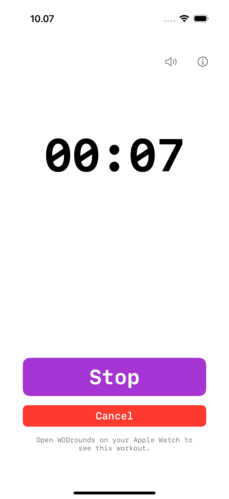

Hochzählen · Schnell fertig
For Time Timer
für CrossFit
Die Uhr zählt von null hoch. Drücke Stopp in dem Moment, in dem du fertig bist, und deine Zeit wird gespeichert. Setze ein optionales Time Cap, dann stoppt der Timer dort automatisch. Läuft auf iPhone, iPad, Apple Watch, Mac und Apple TV, ohne Konto, ohne Abo und ohne Werbung.
Im App Store laden iPhone · iPad · Apple Watch · Mac · Apple TV
Was ist For Time?
For Time ist das klassische CrossFit-Wertungsformat: Absolviere eine feste Menge Arbeit so schnell wie möglich, und deine Wertung ist die Zeit auf der Uhr. Denk an 21-15-9-Couplets, eine feste Rundenzahl oder eine Benchmark-WOD.
Statt eines festen Countdowns zählt die Uhr hoch, während du arbeitest. Du drückst Stopp, sobald du fertig bist, und WODrounds friert deine Zeit ein. Füge ein Cap hinzu, wenn du eine harte Grenze willst, oder lass es weg und laufe einfach gegen die Uhr.

So funktioniert For Time in WODrounds
-
Die Uhr zählt hoch
Bei null starten und los. Die verstrichene Zeit ist die Hauptanzeige, groß und lesbar, damit du immer weißt, wo du stehst.
-
Optionales Time Cap
Lass es auf "No cap", um bis zum Stopp zu laufen, oder setze ein Cap von 0:30 bis 60:00, dann endet der Timer dort automatisch.
-
Stopp speichert deine Zeit
Drücke Stopp in dem Moment, in dem du fertig bist. Deine Zeit wird eingefroren, als "Finished in MM:SS" angezeigt und in Apple Health gespeichert.
-
Folgt auf der Apple Watch
Starte auf dem iPhone, und deine Apple Watch zählt auch am Handgelenk hoch. Läuft auch auf Mac und Apple TV.
Beispiel-For-Time-Workouts
21-15-9 couplet
For Time · Cap 10:00
- 21, dann 15, dann 9 Wdh. von:
- Thrusters
- Pull-ups
- Gegen die Uhr, Cap bei 10 Minuten
5 Runden for time
For Time · Cap 20:00
- 5 Runden von:
- 10 burpees
- 15 kettlebell swings
- 20 air squats
Chipper
For Time · No cap
- Arbeite eine lange Liste einmal durch
- 100 Wiederholungen, auf Übungen verteilt
- No cap: laufe, bis du fertig bist
Nimm deine nächste For Time-WOD auf Zeit
Verfügbar für iPhone, iPad, Apple Watch, Mac und Apple TV.
WODrounds laden Kein Konto nötig. Funktioniert offline.Verwandt
-
EMOM Timer →
Every Minute on the Minute. Runden und Rundenlänge für CrossFit-Tempo einstellen.
-
Intervall-Timer →
Work, Rest und Runden für HIIT und Zirkeltraining einstellen.
-
Tabata Timer →
20 Sekunden an, 10 Sekunden aus, 8 Runden. Das klassische Tabata-Protokoll in WODrounds.
-
Timer-Leitfaden →
Lerne, wann du EMOM vs. Intervalle vs. Tabata vs. For Time verwendest und wie du jedes Format einstellst.